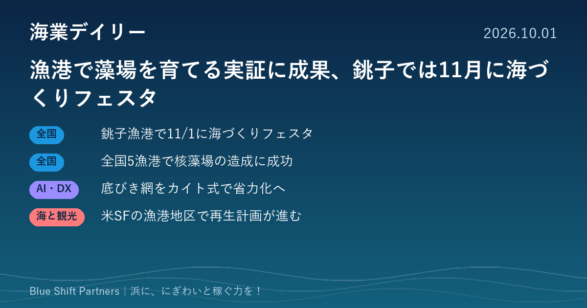

2026.10.01
漁港で藻場を育てる実証に成果、銚子では11月に海づくりフェスタ

10月最初の海業デイリーです。漁港を海藻の「苗床」にするブルーカーボンの実証や、底びき網漁の省力化をめざす共同研究など、漁港と漁業の新しい使い方が動いています。千葉県では来年の全国豊かな海づくり大会に向けたプレイベントが銚子漁港で開かれます。
銚子漁港で11月1日に「豊かな海づくりフェスタ」、全国大会の1年前プレイベント
千葉県は、第46回全国豊かな海づくり大会の1年前プレイベント「豊かな海づくりフェスタ」を、令和8年11月1日（日）に銚子漁港の第3卸売市場と旧第2卸売市場で開くと公表しています。さかなクンのトークショー、海上歓迎パレードと稚魚放流、地元産水産物の販売・試食、タッチプールなどの体験コーナーが予定されています。
ここがポイント：漁港の市場施設を会場にしたにぎわいづくりの実例です。来年の全国大会に向けて県内の浜が注目を集める時期なので、各地の直売や体験メニューを発信する機会としても活用できます。
出典：千葉県「第46回全国豊かな海づくり大会1年前プレイベント『豊かな海づくりフェスタ』を開催します！」（2026-08-27）
漁港を海藻の苗床に、全国5漁港で「核藻場」の造成に成功（NEDO）
NEDOは、グリーンイノベーション基金事業「漁港を利活用した海藻バンクによるブルーカーボン生態系拡大プロジェクト」で、神恵内（北海道）、小波渡（山形県鶴岡市）、只出（岩手県陸前高田市）、保戸島（大分県津久見市）、豊（長崎県対馬市）の5漁港において、設置した海藻カートリッジが約1年で藻場の起点となる「核藻場」に育ったと発表しました。2030年度までに70haの藻場を造成し、年間399t以上のCO2吸収・貯留をめざすとしています。
ここがポイント：漁港の静かな水域を藻場再生の拠点にする取り組みで、種苗の無償提供や技術支援、Jブルークレジットの創出も視野に入っています。磯焼けに悩む浜にとって、漁港の新しい活用法とクレジット収入の両面で注目です。
出典：NEDO「全国5漁港でブルーカーボン増大の起点となる核藻場の造成に成功しました」（PR TIMES）（2026-09-29）
底びき網漁をもっと軽く安全に、ニチモウが「カイト式漁具」の共同研究を開始
ニチモウ株式会社は、水産研究・教育機構、宮崎県水産試験場、鹿児島県水産技術開発センターと、カイト式漁具の社会実装に向けた共同研究を始めたと発表しました。従来のビームトロールで使う硬いビームの代わりに、柔らかい構造の拡網装置で網を広げる漁法で、宮崎県・鹿児島県の底びき網漁船で実証データを集めます。
ここがポイント：人手不足と高齢化が進む漁船漁業では、漁具の軽量化・安全化が担い手確保に直結します。現場データに基づく技術の普及事例として、今後の実証結果を追う価値があります。
出典：ニチモウ株式会社「カイト式漁具の社会実装による漁船漁業の省力化・安全性向上を目指した共同研究を開始」（PR TIMES）（2026-09-30）
サンフランシスコの漁港地区で再生計画、漁船団を「見せる」広場が完成（アメリカ）
サンフランシスコ港は、観光地フィッシャーマンズ・ワーフの中心部を再生する「Fisherman's Wharf Forward」を進めています。第1段階として、新しい公共広場（アリオト・プラザ）が2026年9月2日に公開され、内側の船だまりを望む展望スペースや、漁船団を照らす照明も整えられました。今後は2030年秋にかけて、岸壁の強化・建て替えなど地震や海面上昇に備えた整備と、漁業者向け施設の改善に取り組むとしています。
ここがポイント：漁船が並ぶ風景そのものを観光資源として演出しつつ、漁業の施設改善も同時に進める点は、日本の漁港での海業の考え方と重なります。
出典：Port of San Francisco「Fisherman's Wharf Forward」（アメリカ）（2026-09-02）
今日の話題に共通するのは「漁港を、魚を揚げる場所以上のものとして使う」視点です。藻場の苗床、にぎわいの会場、観光の見せ場と、同じ漁港でも使い方しだいで稼ぐ力は変わります。自分たちの漁港で、いちばん眠っている場所はどこか。そこから海業の計画づくりを始めてみてはいかがでしょうか。